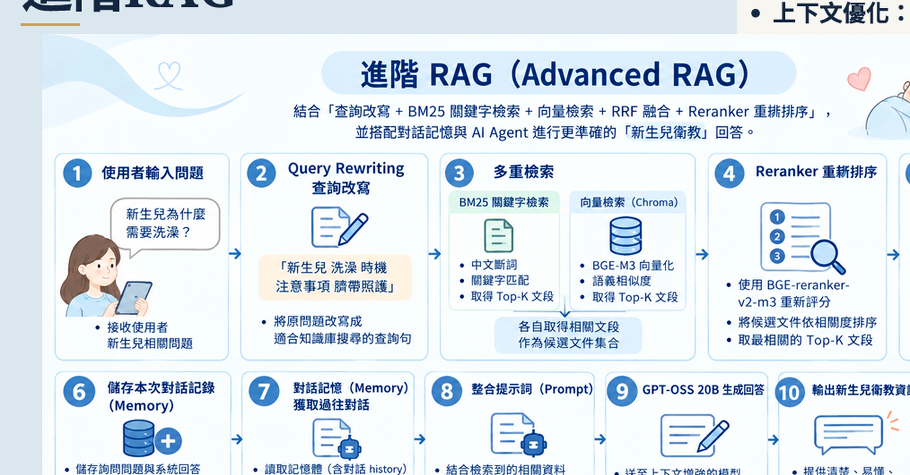
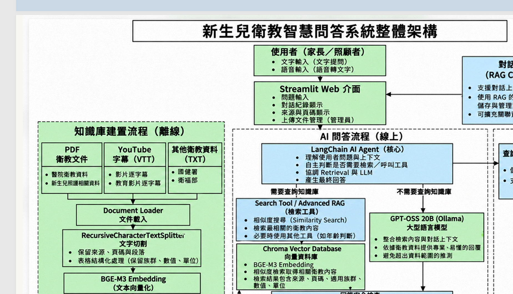

照護資訊需求持續存在
家長可能需要反覆查詢餵食、睡眠、清潔、臍帶護理及常見照護問題。
靜宜大學｜資料科學暨大數據分析與應用學系
新生兒家長在照護過程中，可能需要查詢餵食、睡眠及日常照護等資訊。衛教內容分散於不同文件與影音來源時，查找相關資料可能較不方便。本專題因此嘗試整合多來源衛教資料，建立以檢索增強生成（RAG）為核心的智慧問答流程。
家長可能需要反覆查詢餵食、睡眠、清潔、臍帶護理及常見照護問題。
紙本文件、醫院網站與影音教材需要分別查閱，增加尋找相關資訊的時間。
透過 RAG 先檢索衛教內容，再將相關資料提供給模型生成回答；此作法有助降低無依據回答風險，但不保證每次回答皆正確。
依專題資料整理，知識庫包含醫療院所與政府衛教資訊，以及 YouTube 衛教影片字幕。簡報記載蒐集 20 多份衛教文件及多部影片。
新生兒照護、母乳哺育及相關衛教內容。
孕產婦、新生兒與兒童健康促進相關資訊。
使用 YouTube Transcript API 取得字幕，轉為 TXT 文字資料。
PyPDFLoader 載入 PDF；文字切割設定約 500 字元、重疊 100 字元，再以 BGE-M3 向量化並存入 ChromaDB。
以新生兒衛教資訊查詢為出發點，規劃平台的服務方向。
協助新生兒家長線上取得照護相關資訊。
集中整理衛教資料，提升資訊管理與查詢效率。
透過查詢紀錄與問題統計，作為規劃衛教服務的參考。
依專題實作內容，從文字／語音輸入、問題改寫、混合檢索、排序，到模型生成與來源呈現，逐步說明問答流程。

由 Streamlit 提供問答介面
先讓查詢更適合搜尋，再從衛教知識庫找出相關內容
改寫或整理使用者問題，讓查詢內容更適合後續檢索。
向量搜尋：透過 BGE-M3 的語意向量，在 ChromaDB 知識庫中尋找相近內容。
BM25：以關鍵字相關性找出候選文件。
將向量搜尋與 BM25 的檢索排名進行融合，整合不同檢索方式的結果。
再依問題與候選內容的關聯性重新排序，整理出較適合提供給生成模型的資料。
由語言模型參考檢索結果產生回覆
把檢索及排序後的候選內容作為回答依據，降低模型只依賴參數知識作答的情況。
接收使用者問題與檢索到的上下文，生成自然語言回答。
在問答介面呈現生成內容及參考來源，讓使用者能回頭查看相關衛教資訊。
LangGraph Checkpointer、MemorySaver 與 thread_id 用於延續同一段對話的上下文。這是對話狀態管理，不等於永久保存完整聊天歷史。
系統以 JSON 記錄查詢資料，管理端可透過 Streamlit Dashboard 查看總查詢量、每日查詢、近期紀錄、來源使用情形與常見內容。
說明：此流程依據專題資料整理。RAG 可讓回答參考檢索到的衛教內容，但不代表每次回答都必然正確，也不能取代醫療專業判斷。
以衛教知識為基礎，結合檢索、生成與對話脈絡處理。
整合 PDF 衛教文件、YouTube 影片字幕逐字稿及 TXT 衛教資料，經過文件載入、文字切割與向量化後供系統檢索。
結合 Query Rewriting、向量搜尋、BM25、RRF 與 Reranking，改善問題查詢與候選資料排序。
使用 LangGraph Checkpointer 與 thread_id 保存、辨識對話狀態，讓同一段對話能延續前後文。
依專題簡報中的固定 10 題測試，比較不同檢索策略下回答內容與檢索證據的一致性。
將系統拆成「知識庫建置」與「使用者問答」兩條流程，並呈現管理端的查詢紀錄與統計功能。

先把衛教內容整理成可檢索的知識資料
嘉義基督教醫院衛教資料
國民健康署資料
YouTube 衛教影片字幕
PDF 使用 PyPDFLoader
字幕整理為 TXT
約 500 字元切片、重疊 100 字元
將文字轉成向量表示
向量維度：1024
保存向量化的衛教內容
供後續相似度檢索
從輸入問題到產生有資料依據的回答
輸入文字問題
或語音轉文字後確認
改寫或整理查詢
讓問題更適合檢索
Chroma 向量搜尋 + BM25
以 RRF 融合排序
再用 BGE Reranker 重新排序
參考檢索到的衛教內容
生成回答並呈現來源
LangGraph Checkpointer、MemorySaver 與 thread_id 協助延續同一段對話的上下文；這是對話狀態管理，不等於永久保存完整聊天歷史。
以 JSON 記錄查詢資料，並在 Streamlit Dashboard 查看查詢量、近期紀錄、來源使用情形與常見內容。
圖中呈現的是依專題資料整理的系統邏輯架構；語音輸入使用 Whisper Medium 進行語音轉文字。實際模組串接與部署細節仍以專案程式碼為準。
專題簡報記錄了固定 10 題測試中的回答依據支持率。這是該組測試的結果，不代表所有問題或真實醫療情境的準確率。
依簡報所述，結合語意搜尋與關鍵字搜尋，並加入排名融合與重新排序，有助於提升該組測試中回答內容與檢索證據的一致性。
依專題規劃，後續可朝以下方向擴充；這些項目不代表已經完成。
專題資料另記載以 20 題測試集進行 RAGAS 初步評估；此評估與上方固定 10 題的回答依據支持率屬不同測試呈現，不能直接合併比較。
前往實際問答平台，體驗新生兒衛教資訊的查詢流程。
這是獨立的問答系統服務；GitHub Pages 僅負責介紹網站，不執行後端模型或資料庫。
提醒 本平台為衛教資訊查詢與專題展示用途，不能取代醫師診斷、醫療處置或緊急醫療服務。如寶寶有急迫或嚴重症狀，請立即尋求專業醫療協助。